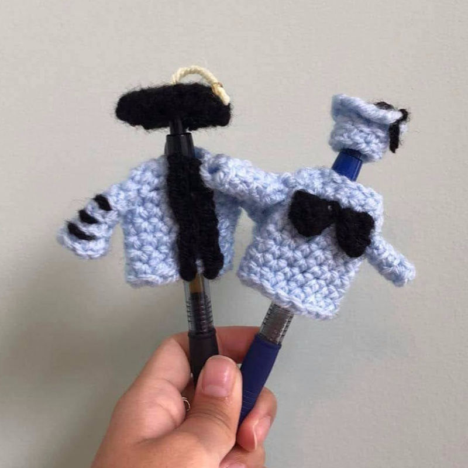
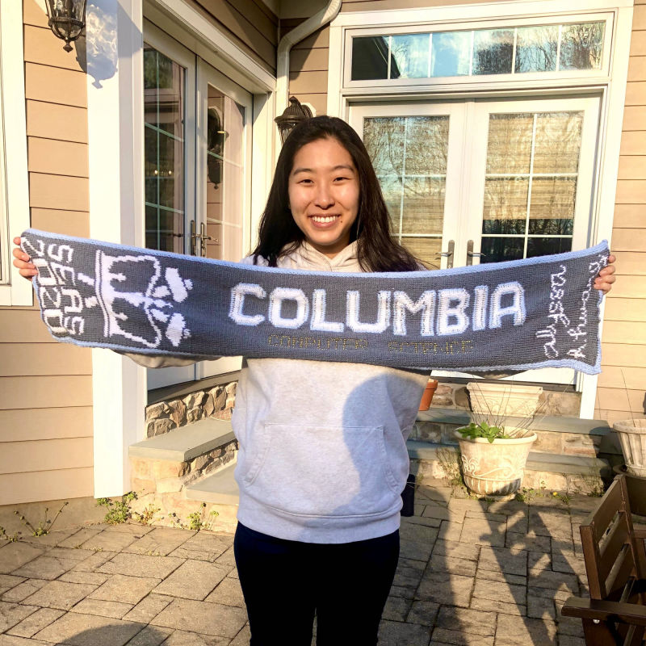
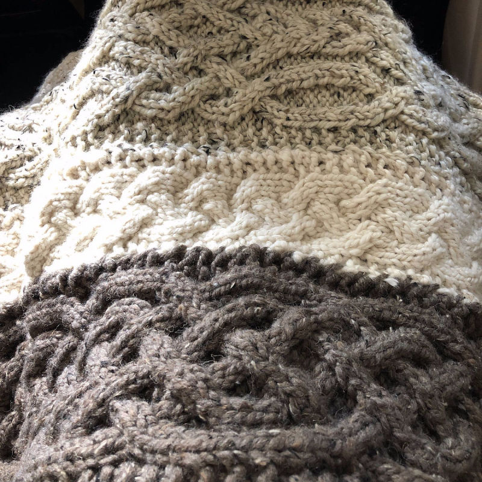
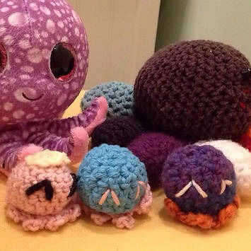

I wanted an ugly Christmas sweater but couldn't find the perfect one, so naturally I designed and knitted a giant, obnoxious, double-sided Christmas scarf. It took me about 4 months--I finished Christmas morning, 2019!
I wanted an ugly Christmas sweater but couldn't find the perfect one, so naturally I designed and knitted a giant, obnoxious, double-sided Christmas scarf. It took me about 4 months--I finished Christmas morning, 2019!No in-person graduation for me or my research mentor because of Corona, so I crocheted us some mini gowns for our pens to wear.
Inspired by a Reddit post and my friends' love for Animal Crossing, three pouches customized with their favorite colors.
A giant, obnoxious, double-sided graduation scarf to go with my Christmas scarf and Corona-induced lack of graduation, of course.
A lap blanket for my dad's birthday, made by knitting Celtic cable "scarves" and sewing them together. It's only half-completed in this picture, oops!
My high school senior mascot was Ollie the Octopus (top left), so I had to crochet a tiny octo-familiy (front three). The rainbow guy in the back in named Kumquatz (I made him in middle school).